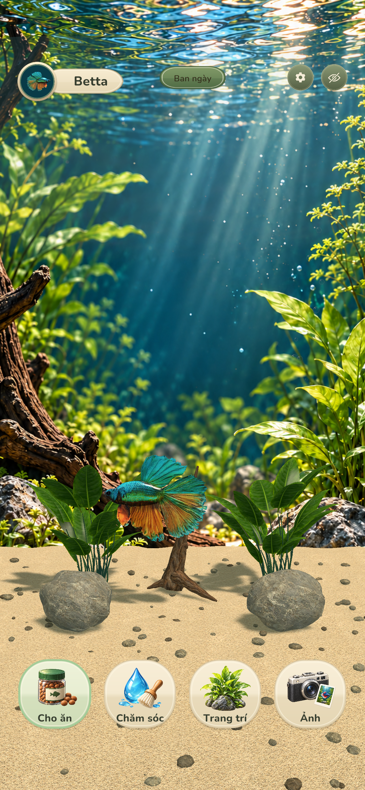

Lumaquarium / Natural visuals v3
Đá mòn, cát mịn, lũa có thớ. Hồ đổi ngày và đêm.
Đá có vân khoáng, sỏi rải trên nền cát hạt nhỏ, lũa uốn nhánh với thớ chạy dọc thân. Ánh sáng ngày ấm chuyển dần sang đêm xanh dịu, đồng bộ với cây, nước và bọt khí. Ảnh và chuyển động bên dưới được ghi trực tiếp từ Unity.
01 · Xem ánh sáng

Trong Unity, chạm nút Ban ngày / Ban đêm ở đầu màn hình để đổi ánh sáng trong khoảng 1,5 giây.
02 · Chuyển ngày → đêm → ngày
90 khung hình Game View trong gần 11 giây. 39 kiểm tra đạt: đặt đồ, lưu/nạp, shader, trạng thái ngày/đêm và phản chiếu.